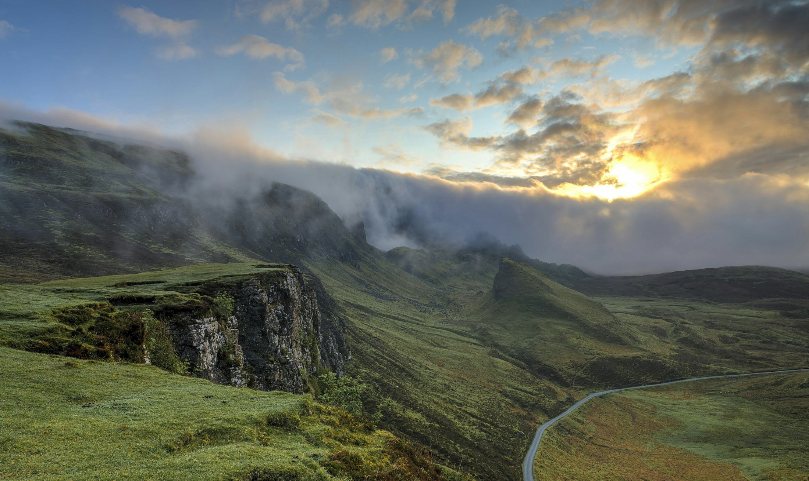

Portraits
Making room for a portrait to feel like you
We start with what helps you feel at ease: a familiar place, something to do, and enough time to forget the camera.

Honest photographs of people, places, and the quiet details that make a story feel like yours.
01 — Selected Work

“The best photographs don't show you what something looked like. They remind you how it felt.”
Elias Vance
02 — About
I'm Elias — a photographer, quiet observer, and collector of small, fleeting things.
My work lives somewhere between documentary and daydream. I'm less interested in perfect poses than in the pause just before one — the glance, the breath, the hand reaching for another.
For over a decade, I've worked with couples, artists, and brands who value stories over trends. Most days you'll find me chasing coastal fog, shooting 35mm, or waiting for the light to change.
03 — Journal
A working journal on photographing people and places with patience — from the first conversation to the last frame.
We start with what helps you feel at ease: a familiar place, something to do, and enough time to forget the camera.

I went looking for a clear horizon. The fog took it away and left me with a quieter way into the landscape.
Film does not make a photograph better. It makes me slower, and slower is often the point.
04 — Contact
Whether it's a wedding, an editorial portrait, or an expedition into quiet landscapes — tell me what you're dreaming up. I'd love to hear it.
hello@eliasvance.comNow booking spring & summer 2026. Typically respond within 48 hours.